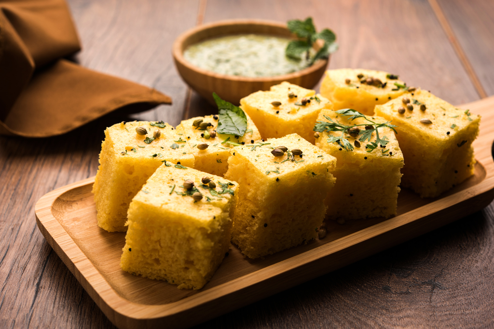

WEST ZONE
Maharashtra: Misal Pav

Misal pav is a popular street food in Maharashtra. A great breakfast recipe that includes a curry made of sprouts, topped with finely chopped onions, tomatoes and ‘farsan’(fried savory mixture) and lime juice served pav, heated on the pan with a hint of butter.
Gujarat: Dhokla
Dhokla is a vegetarian dish made from a fermented batter of rice and split chickpeas. It is served with tangy chutneys and can be eaten for breakfast, as a main course, as a side dish, or as a snack.
Goa: Fish Curry

Xit Codi meaning curry rice is the deliciously tangy fish curry made with special spices, served with steamed rice or roti.
Rajasthan: Dal Baati Churma

Dal Bati Churma is a traditional Rajasthani treat with the spicy dal with the sweet churma along with deep fried crunchy batis (bread).